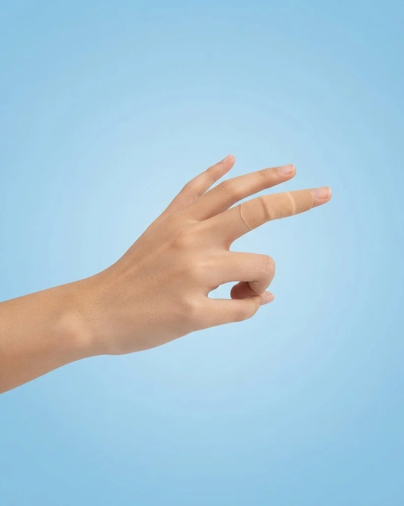

Best First Aid & Medical Devices in Pakistan: Practical Shopping Guide

The best first aid & medical devices in Pakistan offer essential tools for managing health emergencies and daily wellness needs. This guide helps you navigate the available options, focusing on practicality and reliability. The category includes items like bandages, nebulizers, and pulse oximeters, each serving specific health purposes. While some products align with common first aid needs, others are more specialized, such as the portable mesh nebulizer for respiratory care. This guide highlights key considerations for buyers, ensuring you choose items that match your requirements. It also outlines delivery, return, and payment policies to support informed decisions. The focus remains on real-world use cases, helping you select the right medical devices for your household.
Quick buying check: Match the actual item to your task, check its measurements or compatibility, and compare the full delivered price. Read the listing and policies before you order. The examples below are catalog evidence, not hands-on test results.
Key benefits of choosing First Aid & Medical Devices carefully
- Better fit for your task: select the specification or design your situation needs.
- Clearer budget: compare the item, delivery and any required extras together.
- Fewer avoidable returns: resolve missing measurements and compatibility questions before ordering.
- More useful ownership: check how the item will be stored, cleaned and used.
Selection criteria and matching the actual task for First Aid & Medical Devices
When selecting first aid and medical devices in Pakistan, focus on the specific needs of your household or workplace. Consider the most common injuries or health issues you might face, such as cuts, burns, or allergic reactions. Choose devices that are easy to use and suitable for all age groups. Ensure the products are certified and meet local safety standards.
Match the device’s functionality to the task at hand. For example, a blood pressure monitor should be accurate and reliable for regular use. A first aid kit should contain essential items like bandages, antiseptics, and gloves. Avoid overcomplicating your selection with unnecessary features. Prioritize items that offer practical benefits and are easy to maintain. Look for products that are well-reviewed and have a good track record in the Pakistani market to ensure quality and performance.
Always verify the product’s suitability before purchasing. Check if the device is appropriate for the intended user and environment. Consider factors like durability, ease of access, and storage requirements. Ensure that the device can be used without professional assistance. Read customer feedback and compare options based on real-world performance. This helps in making an informed decision that aligns with your specific needs and ensures the device is both effective and practical.
Fit, dimensions, compatibility or edition checks for First Aid & Medical Devices
Check the fit of medical devices like blood pressure monitors or thermometers to ensure they match user needs. Measure the arm circumference for cuffs or the ear size for thermometers. Verify device dimensions against user specifications, especially for home use. Ensure the device is compatible with common power sources or batteries available in Pakistan. Confirm that the device edition supports local language or instructions if needed.
Ensure compatibility with existing medical systems or software if applicable. Check if the device works with other tools like digital health apps or cloud services. Confirm that the edition supports local standards or regulations. Verify that the device can be used in various environments, including homes or offices. Ensure that the device is suitable for the intended user group, such as children or elderly individuals.
Review product dimensions for storage and portability. Measure space where the device will be kept to avoid overcrowding. Check if the device fits in a first aid kit or travel bag. Confirm that the device’s size allows for easy handling and use. Ensure that the edition includes necessary accessories for proper function. Verify that the device’s design meets user preferences and comfort requirements.
Quality evidence and limitations of listing claims for First Aid & Medical Devices
Quality evidence for listing claims in first aid and medical devices in Pakistan should focus on verified product specifications, user reviews from credible sources, and certifications recognized in the country. Look for devices that have been tested and approved by local health authorities or international standards. Reliable sources include government health portals, trusted online marketplaces, and medical associations. Avoid relying solely on marketing claims without supporting data.
Limitations of listing claims often include incomplete product details, unverified user feedback, and potential discrepancies between advertised and actual features. Some listings may lack clear information on warranty, return policies, or after-sales support. Always cross-check information across multiple platforms and consult with healthcare professionals when possible. Be cautious of listings that do not provide detailed descriptions or clear evidence of product quality. Pay attention to delivery times, return options, and customer service responsiveness.
When evaluating listings, prioritize transparency and accuracy. Check for consistent pricing, delivery options, and customer service policies. Pay attention to how well the product meets specific needs, such as portability, ease of use, and durability. Avoid making assumptions about product availability or performance. Always follow the manufacturer's guidelines for use and maintenance to ensure safety and effectiveness. Verify if the product is suitable for the intended user, considering factors like age, health conditions, and environment.
Budget tradeoffs and the full delivered cost for First Aid & Medical Devices
Budget tradeoffs require careful evaluation of essential features versus cost. Prioritize devices that meet critical needs like wound care, CPR training, or emergency response. Less expensive options may lack durability or advanced functionality, leading to higher long-term costs. Consider the frequency of use and the reliability of the product. A slightly pricier item that lasts longer or performs better can be more cost-effective.
Full delivered cost includes shipping, taxes, and potential installation needs. Compare total expenses across platforms to find the most cost-effective option. Some sellers may offer free delivery, while others charge extra for fast shipping. Factor in return policies and delivery times to avoid unexpected costs. Always verify all charges before finalizing a purchase to prevent surprises. Consider local delivery services that may offer lower rates or faster service.
Avoid overspending on unnecessary features that do not align with your specific needs. Focus on essential items that provide the most benefit for your budget. Check for discounts or promotions that can reduce overall costs. Ensure the product meets safety standards and is suitable for local conditions. Make informed choices to maximize value and effectiveness. Always read user reviews and check for any reported issues.
Setup, care, storage and useful ownership for First Aid & Medical Devices
Setup for first aid and medical devices should follow manufacturer guidelines closely. Ensure all components are unpacked and inspected for damage before use. Place devices in easily accessible locations within the home or workplace. Avoid exposing them to extreme temperatures or humidity during initial placement. Verify that all parts are functional and ready for immediate use. Check for any missing items or instructions and contact the seller if issues arise.
Care involves regular checks for wear, expiration dates, and proper function. Clean surfaces with mild soap and water as instructed. Do not use harsh chemicals that may damage materials. Store items in a dry, cool area away from direct sunlight. Keep devices organized to prevent clutter and ensure quick access during emergencies. Inspect bandages, gauze, and other consumables for signs of drying or contamination. Replace any expired or damaged items promptly.
Storage should maintain device integrity and usability. Use original packaging or approved containers for long-term preservation. Keep items out of reach of children and pets. Monitor for any signs of deterioration or malfunction. Regularly review expiration dates and replace as needed to ensure reliability in critical situations. Store devices in a designated first aid kit or cabinet to prevent loss or misplacement. Avoid storing in areas with high moisture or temperature fluctuations.
Common mistakes, arrival inspection and returns for First Aid & Medical Devices
Common mistakes when purchasing first aid and medical devices in Pakistan include overlooking expiration dates and not verifying certifications. Many buyers focus only on price and neglect to check if the product meets local safety standards. Always confirm the device’s validity and ensure it is suitable for the intended use. Avoid assuming all online listings are accurate or up-to-date. Verify the seller’s reputation and read user reviews to avoid counterfeit or expired items.
Upon arrival, inspect all items for damage or missing components. Check that the packaging is intact and that all parts listed are present. If anything is missing or damaged, document it immediately and contact the seller. Do not accept delivery if the package is compromised. Keep all receipts and communication records for any return or exchange. This helps in resolving issues quickly and ensures a smooth return process if needed.
Returns can be complex due to varying seller policies. Understand the return window and conditions before purchasing. Some sellers may require the product to be in original packaging and unused. Be aware of return shipping costs and procedures. If returning via cash on delivery, confirm the process with the seller beforehand. Always follow the outlined steps to avoid delays or rejections.
Future changes and responsible shopping decisions for First Aid & Medical Devices
Future changes in the first aid and medical devices market in Pakistan will likely focus on increased digital integration and more accessible healthcare solutions. As e-commerce grows, consumers can expect more detailed product information and better customer support. Staying informed about these trends helps make smarter purchasing choices. Keep an eye on updates from trusted retailers and official health sources to stay ahead of market shifts.
Responsible shopping decisions involve evaluating long-term needs and environmental impact. Prioritize durable, high-quality products that meet specific requirements rather than opting for cheaper alternatives. Consider the full cost of ownership, including maintenance and replacement. Supporting local manufacturers and verified sellers can also contribute to sustainable growth in the sector. Thoughtful choices today lead to better outcomes tomorrow. Check for certifications and compliance with national health standards to ensure safety and reliability.
Stay updated on product recalls, safety alerts, and regulatory changes affecting medical devices. Regularly check official channels for updates on device standards and performance. This ensures that purchases align with current safety and effectiveness benchmarks. Being proactive in research and verification helps avoid potential risks and supports informed decision-making. Always verify product authenticity and compliance before making a purchase. Look for clear labeling, warranty information, and return policies.
A useful buying decision connects your actual task to a clearly described item. A category name, attractive photo or low headline price cannot replace checking what will arrive and whether it fits.
Illustrative Pakistan use cases for First Aid & Medical Devices
Illustrative: compare a fixed PKR budget
A person with a fixed budget might compare the total delivered cost of a portable mesh nebulizer and a fingertip pulse oximeter. They check the listed price plus delivery fee to ensure it fits within their limit. For example, a nebulizer priced at 896 PKR with a 250 PKR delivery fee totals 1146 PKR, while a pulse oximeter at 822 PKR with the same fee totals 1072 PKR. This helps them choose the most cost-effective option without exceeding their budget.
Illustrative: check fit for shared home use
Someone checking fit or compatibility for shared home use might look for medical devices that are easy to operate and suitable for multiple family members. A flexible fabric bandage set could be ideal for minor injuries, while a pulse oximeter can monitor health for both adults and children. They ensure the devices are user-friendly and durable to meet the needs of different household members.
Illustrative: plan delivery and arrival inspection
A person ordering to a smaller town might focus on delivery timelines and return policies. They check that the product arrives within 3-6 working days and understand the return window of 7 days. Upon arrival, they inspect the item for damage or incorrect items before accepting it. This ensures they receive the right medical device in good condition, even in remote areas.
Comparison and evidence from actual catalog listings
The following listing snapshot was recorded at 2026-11-03 05:30:17 PKT. These are seller-provided descriptions, not independent performance tests. A category label does not confirm that an item suits every task discussed in this guide. Check the linked item for its current price, availability, measurements and included accessories.
| Listed item | Snapshot price | Listing evidence and limits |
|---|---|---|
| Flexible Fabric Bandages (50 Pieces Per Box) | Rs 197 | Listing description: RONG-BANG Flexible Fabric Bandages (50 pieces). Skin color, 70mm x 18mm. Features: Free, Flexible, Comfortable, and Breathing. Perfect for minor cuts and wounds. Confirm any unspecified detail with the store. |
| Portable Mesh Nebulizer For Kids And Adults - Health Accessory Designed For Respiratory Care And Daily Medical Routine | Rs 896 | Listing description: This Portable Mesh Nebulizer For Kids And Adults Provides A Reliable Solution For Health Accessories And Routine Respiratory Care Needs. Formulated To Deliver Medical Benefits While Supporting Portable Mesh Nebulizer For Kids And Adults Utility, It Fits Seamlessly Into Your Regular Respiratory Care Or Daily Regimen. Designed For Easy Operation And Convenient Use, It Offers Confirm any unspecified detail with the store. |
| Fingertip Pulse Oximeter – Blood Oxygen Saturation & Heart Rate Monitor | Rs 822 | Listing description: Stay informed about your health and fitness levels with the Fingertip Pulse Oximeter with Heart Rate Monitor. Designed for fast, non-invasive readings, this lightweight device slips easily onto your fingertip to measure your blood oxygen levels (SpO2) and pulse rate with clinical-grade accuracy.Equipped with a bright, easy-to-read LED or OLED display, it presents your metrics Confirm any unspecified detail with the store. |
Delivery and returns: Sasta Milaga currently lists Rs 250 delivery, free above Rs 5,000. Usual estimates are 2-4 working days in major cities and 3-6 elsewhere. Returns can be requested within 7 days; damaged or wrong items return free, while other returns cost Rs 250. Check delivery terms and return terms for current conditions.
Frequently asked questions about First Aid & Medical Devices in Pakistan
How do I choose First Aid & Medical Devices for my needs?
To choose first aid and medical devices, consider the specific needs of your household or individual. Look for items that address common injuries or health concerns, such as bandages, oximeters, or nebulizers. Ensure the products are suitable for the intended age group and usage scenarios.
What should I check in the listing before ordering?
Before ordering, review the product description for key features like size, material, and functionality. Check if the item includes necessary accessories or instructions. Verify the seller’s return and delivery policies to understand your options if issues arise.
How do I compare the full cost in Pakistan?
To compare full costs, add delivery fees and potential return charges to the listed price. Check if free delivery applies based on the order value. Factor in any additional costs like payment methods or service charges to get an accurate total expense.
How much is Sasta Milaga delivery and how long does it take?
Sasta Milaga currently lists Rs 250 delivery, with free delivery on orders above Rs 5,000. Usual estimates are 2-4 working days in major cities and 3-6 working days elsewhere. Read the linked delivery page for current conditions and allow for your specific address.
Can I return a damaged, wrong or unsuitable item?
The published return window is 7 days after delivery. Damaged or wrong items return free, while other returns carry a Rs 250 fee. Read the linked return policy, keep the packaging and report the issue promptly.
Are the product examples independently tested recommendations?
No. The examples are a dated snapshot of seller-provided catalog listings. We have not independently tested these items or verified customer outcomes. Prices and availability can change. Open each product page, compare the stated specifications with your needs and ask the store about missing details.
Conclusion
The best first aid & medical devices in Pakistan offer essential tools for managing health emergencies and daily wellness needs. While the available listings provide a range of products, they are not comprehensive or independently tested, so buyers should focus on key features like comfort, accuracy, and ease of use. Practical next steps include checking delivery timelines, return policies, and payment options before purchasing. Always verify product descriptions and consider the specific needs of your household. With careful selection and awareness of the limitations in the catalog, shoppers can make informed choices that support health and safety effectively.
Choose with a clear checklist. Browse First Aid & Medical Devices and compare current listing details. Read how to order before placing a cash-on-delivery order. Take time to confirm the item fits your needs.
Tags: best first aid & medical devices in Pakistan, first aid & medical devices online Pakistan, buy first aid & medical devices online, first aid & medical devices price in Pakistan, first aid & medical devices comparison, first aid & medical devices shopping checklist, first aid & medical devices cash on delivery, how to choose first aid & medical devices for everyday use, what to check before buying first aid & medical devices online, compare first aid & medical devices with delivery costs in Pakistan, first aid & medical devices buying guide for Pakistani families, questions to ask before ordering first aid & medical devices with COD
More guides
Choosing wireless earbuds on a budget
What matters in budget wireless earbuds: fit, battery life, Bluetooth version, noise cancelling and the case. A simple guide before you buy.
Automotive size fit compatibility Pakistan: Size, Fit and Compatibility Checklist
Compare Automotive in Pakistan: listing details, fit and delivered costs. Read product, delivery and return information before ordering.
Audio & entertainment size fit compatibility Pakistan: Size, Fit and Compatibility Checklist
Compare Audio & Entertainment in Pakistan: listing details, fit and delivered costs. Read product, delivery and return information before ordering.